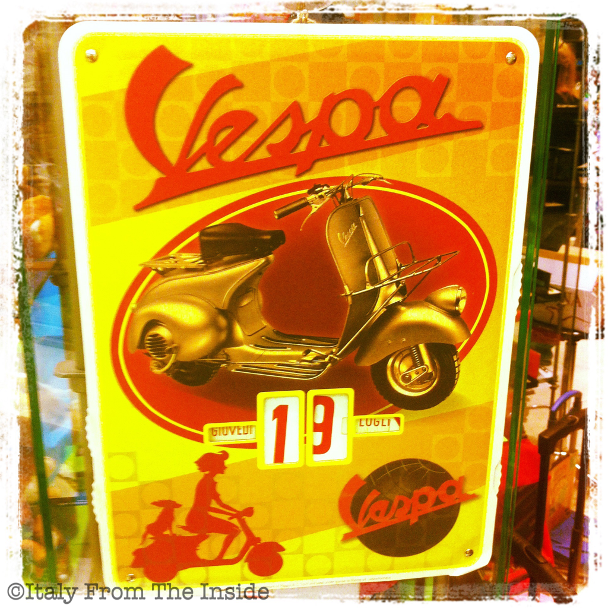

This calendar is vintage in every sense: not only it displays an image of one the earliest Vespas, but it also operates like the old calendars used to do: with a wheel system that allows you to change date (and keep the thing forever, which is why it is called calendario perpetuo- perpetual calendar). Go, Vespa lovers, go!